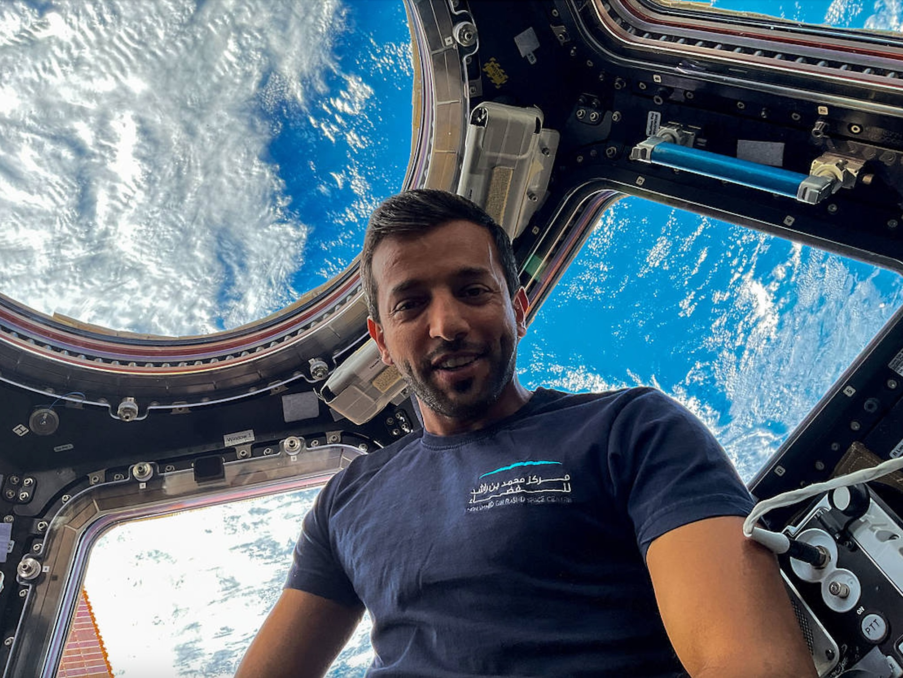

Egypt News

COP28: A timeline of the United Nations' pledge to tackle climate change
COP3, held in Kyoto in 1997, saw the historical milestone of the Kyoto Protocol, the world’s first greenhouse gas emissions reduction treaty. The commitment to reduce emissions of greenhouse gases in industrialized countries laid the foundation of the carbon market.
United States News
US President Biden to meet 18 Pacific leaders in Papua New Guinea
US President Biden to meet 18 Pacific leaders in Papua New Guinea
US President Joe Biden will meet 18 leaders from the South Pacific when he visits Papua New Guinea in May, a top regional diplomat said Saturday, as the US and China vie for influence in the region.
Emirates News
Watch: UAE’s Sultan al-Neyadi becomes first ever Arab astronaut to perform spacewalk
Al-Neyadi, who is currently at the International Space Station (ISS) as part of the longest Arab space mission to date, embarked on the spacewalk – when an astronaut leaves a space ship or space station – at 5:45 p.m. on Friday.